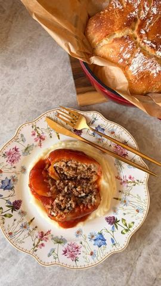

Moja beleška
SačuvanoJedno od onih jela koje se ne pravi samo zbog ukusa, već zbog osećaja koji donosi za sto. Sočne, mekane, u bogatom paradajz sosu,baš onako kako ih najviše volimo.
Sastojci
- Sastojci
- Za sos
Priprema
Paprikama uklonite peteljke i semenke, pa svaku blago zasecite da kasnije lepo upije sos. Crni luk sitno iseckajte (ili izblendajte), pa ga lagano dinstajte na malo ulja oko 10 minuta. Dodajte sitno rendanu šargarepu, kratko promešajte, pa dodajte mleveno meso. Začinite solju, biberom i slatkom paprikom, dodajte opran pirinač i sve lepo sjedinite. Za sos, na dve kašike ulja kratko propržite brašno, pa dodajte paradajz sok i vodu, so i malo šećera. Ostavite da lagano prokrčka. Svaku papriku napunite filom i zatvorite tankim kolutom krompira, da fil ostane unutra tokom pečenja. Ređajte paprike u kaserolu, prelijte sosom tako da prekrije više od polovine paprika. Ja sam koristila Rosmarino HexaPRO kaserolu @vitapur_srbija koja je pogodna i za rernu (do 220°C) i savršeno ravnomerno raspoređuje toplotu, pa se paprike polako krčkaju u sopstvenom soku bez lepljenja. Pecite poklopljeno 60 minuta na 220°C, zatim sklonite poklopac, smanjite temperaturu na 200°C i pecite još 30-40 minuta, uz jedno lagano okretanje paprika. Rezultat su mekane, sočne paprike u bogatom sosu koje razmirišu celu kuću ❤️ Ja ih najviše volim uz kremasti pire i domaći hleb i kod nas nestanu sa stola za tren 🤍 Sačuvajte recept za prvi sledeći ručak ✨
Originalni opis sa Instagrama
Punjene paprike iz rerne - ručak koji uvek miriše na dom ❤️ Jedno od onih jela koje se ne pravi samo zbog ukusa, već zbog osećaja koji donosi za sto. Sočne, mekane, u bogatom paradajz sosu,baš onako kako ih najviše volimo. Sastojci: •9-10 babura paprika •500 g mlevenog mesa (goveđe, svinjsko ili mešano) •2 glavice crnog luka •1 šargarepa •1 krompir (za zatvaranje paprika) •100 g pirinča (okruglo zrno, opran) •so, biber, slatka mlevena paprika Za sos: •2 kašike ulja •1 kašika brašna •500 ml paradajz soka •300 ml vode •so, pola kašičice šećera •po želji malo peršuna ili bosiljka Priprema: Paprikama uklonite peteljke i semenke, pa svaku blago zasecite da kasnije lepo upije sos. Crni luk sitno iseckajte (ili izblendajte), pa ga lagano dinstajte na malo ulja oko 10 minuta. Dodajte sitno rendanu šargarepu, kratko promešajte, pa dodajte mleveno meso. Začinite solju, biberom i slatkom paprikom, dodajte opran pirinač i sve lepo sjedinite. Za sos, na dve kašike ulja kratko propržite brašno, pa dodajte paradajz sok i vodu, so i malo šećera. Ostavite da lagano prokrčka. Svaku papriku napunite filom i zatvorite tankim kolutom krompira, da fil ostane unutra tokom pečenja. Ređajte paprike u kaserolu, prelijte sosom tako da prekrije više od polovine paprika. Ja sam koristila Rosmarino HexaPRO kaserolu @vitapur_srbija koja je pogodna i za rernu (do 220°C) i savršeno ravnomerno raspoređuje toplotu, pa se paprike polako krčkaju u sopstvenom soku bez lepljenja. Pecite poklopljeno 60 minuta na 220°C, zatim sklonite poklopac, smanjite temperaturu na 200°C i pecite još 30-40 minuta, uz jedno lagano okretanje paprika. Rezultat su mekane, sočne paprike u bogatom sosu koje razmirišu celu kuću ❤️ Ja ih najviše volim uz kremasti pire i domaći hleb i kod nas nestanu sa stola za tren 🤍 Sačuvajte recept za prvi sledeći ručak ✨